This guide covers all of Midnight Blacksmithing. You'll find every weekly and one-time Knowledge source, profession equipment, and full recipe lists for plate armor, weapons, embellishments, alloys, and house decor.
If you need help leveling Blacksmithing from 1 to 100, check out my leveling guide:
Midnight Blacksmithing Leveling Guide
Midnight Blacksmithing Changes
If you already played The War Within, here's what changed. Most of the system is the same, so you won't have trouble adapting.
- Quality Changes - Bronze-quality reagents and consumables have been removed in Midnight. All reagents and consumables now only have two quality levels: Silver and Gold. This means you will always get at least a Silver-quality item, and you can use your Concentration right away to craft Gold-quality items. Weapons, armor, and profession equipment still have 5 ranks.
- Artisan Blacksmith's Moxie - The BoP currency
 Artisan's Acuity that you got from earning profession Knowledge in The War Within has been changed to a profession-specific currency,
Artisan's Acuity that you got from earning profession Knowledge in The War Within has been changed to a profession-specific currency,  Artisan Blacksmith's Moxie. You can now only use it for Blacksmithing-specific recipes.
Artisan Blacksmith's Moxie. You can now only use it for Blacksmithing-specific recipes. - Epic Profession Tools - New Epic-quality profession tools are available. They give the same Skill as Rare tools, but have higher secondary stats like Resourcefulness, Multicraft, and Ingenuity.
- Ignition Buff Removed - The temporary crafting buff from The War Within (where you had to craft an ignition item before crafting gear) is gone. You now get permanent stat bonuses through the specialization tree instead.
- Frameworks Gone - The framework system from The War Within has been removed. These optional reagents now come from patron order bag rewards instead.
Weekly Blacksmithing Knowledge in Midnight
In Midnight, there are four weekly sources of profession Knowledge, giving you ~31 Knowledge Points per week. But this is only an estimate, because Patron Orders require crafting specific items at high quality, so your actual weekly total will be lower if you don't have the recipe or can't hit the quality target.
| Source | Details |
|---|---|
| Patron Crafting Orders (~24 KP) | Patron orders are the main source of Knowledge Points. You will receive multiple orders throughout the week. Some of them will reward you with |
| Weekly Quest (2 KP) | Your profession trainer will offer a weekly quest that asks you to complete 3 Crafting Orders. This rewards a Thalassian Blacksmith's Journal worth 2 Knowledge Points and resets every week. |
| Weekly Drops (4 KP) | Each week, you can loot 1 of each of the following items from treasures scattered around the new zones: Thalassian Whetstone and Infused Quenching Oil. |
| Inscription Treatise (1 KP) | To get a |
| Darkmoon Faire (3 KP / month) | Once a month, the Darkmoon Faire comes to town and you can complete a quick profession quest for +3 Knowledge Points and +2 Profession Skill. It's not a weekly source, but don't skip it. The Faire starts on the Sunday before the first Monday of each month. |
| Catch-up System | If you fall behind or start late, you will receive |
One-Time Blacksmithing Knowledge in Midnight
Here is every one-time source of Blacksmithing Knowledge in the Midnight expansion. These treasures are the fastest way to get Knowledge Points for your profession specialization, so you should collect them as soon as possible. Each treasure is a one-time pickup per character.
Renown Knowledge Book
Beyond the Event Horizon: Blacksmithing is sold by the Voidstorm Renown Quartermaster.
Midnight Blacksmithing Treasures
There are 8 Blacksmithing treasures in Midnight. Collecting them provides 24 Knowledge Points in total.
| Treasure | Zone | Map |
|---|---|---|
| Sin'dorei Master's Forgemace | Silvermoon City | |
| Silvermoon Blacksmith's Hammer | Silvermoon City | |
| Deconstructed Forge Techniques | Silvermoon City | |
| Metalworking Cheat Sheet | Eversong Woods | |
| Silvermoon Smithing Kit | Eversong Woods | |
| Carefully Racked Spear | Zul'Aman, Atal'Aman | |
| Rutaani Floratender's Sword | Harandar | |
| Voidstorm Defense Spear | Voidstorm |
TomTom Waypoints & Treasure Check Macro
TomTom Waypoints
/ttpaste in-game/way #2393 49.2, 61.3 Sin'dorei Master's Forgemace /way #2393 48.5, 74.7 Silvermoon Blacksmith's Hammer /way #2393 26.9, 60.3 Deconstructed Forge Techniques /way #2395 56.8, 40.8 Metalworking Cheat Sheet /way #2395 48.3, 75.8 Silvermoon Smithing Kit /way #2536 33.2, 65.9 Carefully Racked Spear /way #2413 66.3, 50.9 Rutaani Floratender's Sword /way #2444 30.6, 69.0 Voidstorm Defense Spear
Treasure Check Macro
true = collectedBlacksmithing Specializations
There are four specialization trees available. You will unlock access to them at Blacksmithing skill levels 25, 50, 60, and 75.
- Armorsmithing - Epic plate armor recipes, one per slot.
- Weaponsmithing - Epic weapon recipes plus whetstones.
- Craftsmithing - Profession tools, accessories, and Tool Stones for other crafters.
- The Old Ways - Alloys and crafting stats.
I have a separate guide that walks through the best builds for each playstyle with step-by-step Knowledge Point allocation.
Midnight Blacksmithing Specialization Guide & Best Builds
Profession Equipment
Epic profession tools are new in Midnight. In The War Within, professions only had Green and Rare tools. Epic tools give the same Skill as Rare, but have higher secondary stats like Resourcefulness, Multicraft, and Ingenuity.
Profession Gear for Blacksmiths
Blacksmiths can craft their own Hammer and Toolbox. You will need to get the apron from a Leatherworker.
| Slot | Crafted By | Green Quality | Blue Quality | Epic Quality |
|---|---|---|---|---|
| Tool | Blacksmithing | 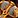 Thalassian Blacksmith's Hammer |
Sun-Blessed Blacksmith's Hammer | Sunforged Blacksmith's Hammer |
| Accessory | Blacksmithing | 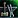 Thalassian Blacksmith's Toolbox |
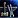 Sun-Blessed Blacksmith's Toolbox |
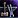 Sunforged Blacksmith's Toolbox |
| Accessory | Leatherworking |
Craftable Profession Equipment
Blacksmiths can craft profession equipment for Leatherworking, Tailoring, Mining, Herbalism, and Skinning.
| Profession | Green Quality | Blue Quality | Epic Quality |
|---|---|---|---|
| Leatherworking (Tool) | Thalassian Leatherworker's Knife | Sun-Blessed Leatherworker's Knife | Sunforged Leatherworker's Knife |
| Leatherworking (Acc) | Thalassian Leatherworker's Toolset | Sun-Blessed Leatherworker's Toolset | Sunforged Leatherworker's Toolset |
| Tailoring | |||
| Mining | Thalassian Pickaxe | Sun-Blessed Pickaxe | Sunforged Pickaxe |
| Herbalism | |||
| Skinning | 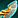 Thalassian Skinning Knife |
Sun-Blessed Skinning Knife | Sunforged Skinning Knife |
Plate Armor
Blacksmiths can craft three tiers of Plate Armor in Midnight. Rare (Blue) gear is learned from the trainer and is great for alts or fresh characters gearing up. Epic (Purple) gear requires specialization points in Armorsmithing and can be upgraded to Mythic-raid item levels with the right Crests.
PvP gear has its own vendor and is mostly useful for players who want a cheaper starting point with PvP-specific stats. The recipes are Green quality, but the crafted items scale based on your Skill and optional reagents.
| Recipe | Source |
|---|---|
| Blood-Tempered Basinet | Trainer (25) |
| Blood-Tempered Bracers | Trainer (20) |
| Blood-Tempered Bulwark | Trainer (25) |
| Blood-Tempered Chestplate | Trainer (10) |
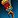 Blood-Tempered Gauntlets |
Trainer (30) |
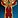 Blood-Tempered Greatbelt |
Trainer (20) |
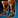 Blood-Tempered Greaves |
Trainer (5) |
| Blood-Tempered Leggings | Trainer (35) |
| Blood-Tempered Pauldrons | Trainer (30) |
| Recipe | Source |
|---|---|
| Spellbreaker's Bracers | Spec: Armorsmithing - Vambraces |
| Spellbreaker's Cover | Spec: Armorsmithing - Helms |
| Spellbreaker's Girdle | Spec: Armorsmithing - Belts |
| Spellbreaker's Legguards | Spec: Armorsmithing - Greaves |
| Spellbreaker's Mantle | Spec: Armorsmithing - Pauldrons |
| Spellbreaker's March | Spec: Armorsmithing - Sabatons |
| Spellbreaker's Rebuke | Spec: Armorsmithing - Shields |
| Spellbreaker's Resolve | Spec: Armorsmithing - Gauntlets |
| Spellbreaker's Shelter | Spec: Armorsmithing - Chestplates |
| Knight-Commander's Palisade | Drop: General Amias Bellamy |
| Murder Row Fleet Feet | Drop: Lithiel Cinderfury |
| Recipe | Source |
|---|---|
| Thalassian Competitor's Bulwark | Vendor: Mirvedon (Silvermoon City) |
| Thalassian Competitor's Plate Armguards | Vendor: Mirvedon (Silvermoon City) |
| Thalassian Competitor's Plate Breastplate | Vendor: Mirvedon (Silvermoon City) |
| Thalassian Competitor's Plate Gauntlets | Vendor: Mirvedon (Silvermoon City) |
| Thalassian Competitor's Plate Greaves | Vendor: Mirvedon (Silvermoon City) |
| Thalassian Competitor's Plate Helm | Vendor: Mirvedon (Silvermoon City) |
| Thalassian Competitor's Plate Pauldrons | Vendor: Mirvedon (Silvermoon City) |
| Thalassian Competitor's Plate Sabatons | Vendor: Mirvedon (Silvermoon City) |
| Thalassian Competitor's Plate Waistguard | Vendor: Mirvedon (Silvermoon City) |
Weapons
Blacksmiths can craft daggers, swords, axes, maces, fist weapons, polearms, and warglaives. If you play a melee class, this is how you craft your own weapons.
Epic weapons require points in the Weaponsmithing specialization. Some recipes drop from specific rare enemies or are sold by vendors in Silvermoon City. If you're specializing in weapons, check the source column to plan which recipes to prioritize.
| Recipe | Type | Source |
|---|---|---|
| Dawnforged Edge | Dagger | Trainer (20) |
| Dawnforged Long Blade | One-Handed Sword | Trainer (25) |
| Dawnforged Ritual Knife | Dagger | Trainer (20) |
| Dawnforged Splitter | One-Handed Axe | Trainer (25) |
| Dawnforged War Mace | Two-Handed Mace | Trainer (35) |
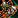 Primalforged Heavy Axe |
Two-Handed Axe | Trainer (20) |
| Primalforged Knuckles | Fist Weapon | Trainer (40) |
Blood Knight's Mercy, Blood Knight's Warblade, Magister's Cleaver, Magister's Mana Sword, and Magister's Ritual Knife are also sold by Eriden / Lyrendal in Silvermoon City.
| Recipe | Type | Source |
|---|---|---|
| Polearm | Drop: Vaelgor | |
| Blood Knight's Mercy | Two-Handed Mace | Spec: Weaponsmithing - Maces |
| Blood Knight's Warblade | Two-Handed Sword | Spec: Weaponsmithing - Long Blades |
| Bloomforged Claw | Fist Weapon | Vendor: Eriden (Silvermoon City) |
| Bloomforged Greataxe | Two-Handed Axe | Drop: Vorasius |
| Farstrider's Chopper | One-Handed Axe | Spec: Weaponsmithing - Axes and Polearms |
| Farstrider's Mercy | Dagger | Spec: Weaponsmithing - Short Blades |
| Magister's Cleaver | One-Handed Axe | Spec: Weaponsmithing - Axes and Polearms |
| Magister's Mana Sword | One-Handed Sword | Spec: Weaponsmithing - Long Blades |
| Magister's Ritual Knife | Dagger | Spec: Weaponsmithing - Short Blades |
| Magister's Valediction | Two-Handed Mace | Vendor: Eriden (Silvermoon City) |
| Spellbreaker's Blade | One-Handed Sword | Spec: Weaponsmithing - Long Blades |
| Spellbreaker's Ultimatum | One-Handed Mace | Spec: Weaponsmithing - Maces |
| Spellbreaker's Warglaive | Warglaive | Spec: Weaponsmithing - Blades |
| Recipe | Type | Source |
|---|---|---|
| Thalassian Competitor's Greatsword | Two-Handed Sword | Vendor: Mirvedon (Silvermoon City) |
| Thalassian Competitor's Knife | Dagger | Vendor: Mirvedon (Silvermoon City) |
| Thalassian Competitor's Maxim | One-Handed Mace | Vendor: Mirvedon (Silvermoon City) |
| Thalassian Competitor's Pickaxe | One-Handed Axe | Vendor: Mirvedon (Silvermoon City) |
| Thalassian Competitor's Spelldagger | Dagger | Vendor: Mirvedon (Silvermoon City) |
| Thalassian Competitor's Splitter | One-Handed Axe | Vendor: Mirvedon (Silvermoon City) |
| Thalassian Competitor's Sword | One-Handed Sword | Vendor: Mirvedon (Silvermoon City) |
Embellishments
Embellished gear comes with powerful unique effects. You can only equip two embellished items at a time across all your gear, so choose carefully based on your spec and playstyle.
Unlike The War Within where some embellishments were learned from specializations, all Midnight embellishments are world drops. You can focus your spec points on crafting quality instead of unlocking recipes.
| Recipe | Effect | Source |
|---|---|---|
| Knight-Commander's Palisade | Chance on hit to gain an absorption shield | Drop: Plans (World) |
| Murder Row Fleet Feet | Chance to increase Avoidance | Drop: Lithiel Cinderfury (Murder Row) |
| Murder Row Fishhook | Chance to bleed target for Physical damage | Drop: Lithiel Cinderfury (Murder Row) |
Reagents, Alloys & Misc
Blacksmiths produce alloys for crafting, weapon enhancements for temporary buffs, and utility items like skeleton keys.
Alloys are required materials for most Blacksmithing recipes. You'll craft a lot of these, so consider The Old Ways specialization if you want to make them more efficiently. Weaponstones (Whetstone, Weightstone, Razorstone) are 2-hour weapon buffs with steady demand on the Auction House.
| Recipe | Description | Source |
|---|---|---|
| Basic crafting alloy | Trainer (1) | |
| Refulgent Repair Hammer | Repairs weapons & plate armor (consumed) | Trainer (5) |
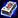 Gloaming Alloy |
Mid-tier crafting alloy | Trainer (15) |
| Mid-tier crafting alloy | Trainer (25) | |
| Refulgent Weightstone | +Attack Power for blunt weapons (2h) | Trainer (40) |
| +Finesse for gathering tools (2h) | Trainer (45) | |
| Refulgent Whetstone | +Attack Power for bladed weapons (2h) | Spec: Weaponsmithing - Weaponstones |
| Thalassian Skeleton Key | Opens locked chests (consumed) | Vendor: Eriden (Silvermoon City) |
House Decor
Player Housing is a new feature in Midnight, and Blacksmiths can craft anvils, tool displays, and decorative hangers for your home.
| Recipe | Source |
|---|---|
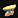 Gilded Silvermoon Anvil |
Vendor: Caeris Fairdawn (Eversong Woods) |
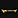 Gilded Silvermoon Hanger |
Vendor: Caeris Fairdawn (Eversong Woods) |
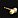 Masterwork Crafting Hammer |
Vendor: Eriden (Silvermoon City) |
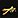 Ornamental Silvermoon Hanger |
Gather: World Nodes |
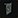 Ornate Crafter's Tongs |
Vendor: Eriden (Silvermoon City) |
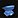 Ren'dorei Anvil |
Vendor: Void Researcher Anomander (Voidstorm) |